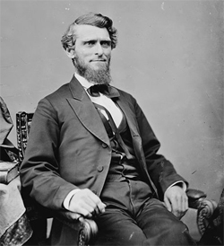

|
West Virginia was separated from Virginia by its Unionist leaders following
secession. Long resentful of the domination of the commonwealth by eastern
slaveholders, Unionists in northwestern Virginia met in convention at Wheeling
to call for action in the event of passage of the secession ordinance.
Accordingly, a second Wheeling Convention met on May 23, 1861, and established a
Restored Government of Virginia with Francis H. Pierpont as Governor. Abraham
Lincoln recognized this government on July 4, but the advocates of separate
statehood, in an adjourned convention at Wheeling in August, succeeded in
passing a dismemberment ordinance. A constitution for the new state was drawn up
in November; the Wheeling legislature gave its consent in May 1862, and in July
|

Arthur I. Boreman
|
the Senate, followed in December by the House of Representatives, agreed to the
necessary legislation. After the addition of the so-called Willey Amendment
calling for the gradual abolition of slavery, Lincoln signed the statehood bill
on December 31. The amendment was ratified in March 1863 and the new state
admitted in June.
From the very beginning the Unionists and later the Republicans in West
Virginia were divided. Neither the conservatives nor the radicals favored black
suffrage, but the radicals tended to be less backward looking than their
opponents. In February 1865 they succeeded in abolishing slavery, but because of
the incorporation of twenty-five secessionist counties, the Unionist majority in
the state was always in a precarious situation. Under the leadership of Governor
Arthur I. Boreman, in the beginning of 1865 the Unionists found it necessary to
pass stringent disfranchising laws to restrict the political power of returning
Confederates, and in 1866 they added provisions for an ironclad oath for
attorneys, suitors, juries, and teachers, but by 1869 many of the more
conservative Republicans were urging greater leniency toward their former
opponents. They were further alienated by the passage of the Fifteenth
Amendment, and because of lax enforcement of the disfranchising regulations, in
1870 the Democrats carried the legislature and elected the Governor. Their
victory had been made possible by a combination of conservative Republicans and
returned Confederates in the secessionist counties.
"Redemption" had thus begun in West Virginia. Making the most of their
victory, the Democrats called a constitutional convention and in 1872 wrote a
new conservative constitution, which was adopted by the electorate. It enabled
them to dominate the state for several generations.
Source: Hans Trefousse, Historical Dictionary of Reconstruction
(Westport, CT: Greenwood Press, 1991), 253-54.
|